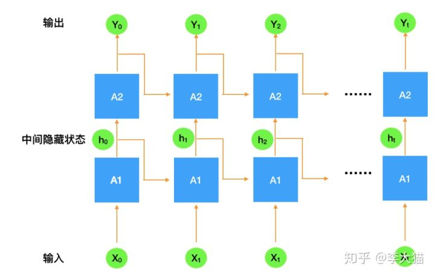

LSTM
- Long -Short Term Memory
能够解决RNN的中 gradient vanishing 问题，同时能够追踪长距离依赖，往往是用于解决基于文本的一些问题
组成
三个门组成：Input Gate, Forget Gate, Output Gate， 如下图所示


公式中的前三行可以认为是门函数，结果表示经过门筛选之后的一个过滤器（元素数值在01之间），后三行中，h表示隐状态，后面三个公式表示记忆的一些处理，其中W和U都表示权重
一般来说，我们经常取隐状态作为输出，认为隐状态包含了输入时序信号的融合信息，但是输出门的输出表示什么呢？目前还不知道。
- 注意所有的门函数的激活函数都是一样的
GRU
组成
Reset Gate 和 Update Gate
Reset Gate 决定如何将新的输入信息和前面的记忆相结合，更新门则定义了前面记忆中保存到当前时间步的量，若将reset gate 设置为1而update gate 设置成0，就会得到标准RNN
拓扑图
- 拓扑图应该是下图（这应该是最清晰好理解的了）：

说明：上图中A1表示第一层LSTM，A2表示第二层LSTM，以此类推；我们将第一个时序x0送到第一层LSTM中，此时，一并输入的隐状态一般是全0（上图未画出），然后此时网络的输出认为是当前时序下的隐状态输出h0，注意这个h0不仅是当前层和下一个时序一起送进来的隐变量，也是下一层LSTM当前时序的数据输入。换句话说，除了第一层之外，更深层的LSTM其时序数据为上一层LSTM对应时序下输出的隐状态，即只有在第一层的LSTM中才会用到原始时序数据。一般而言，我们取整个LSTM网络得输出，是最后一层的最后一个时序的隐状态输出。